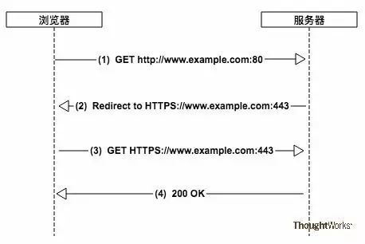
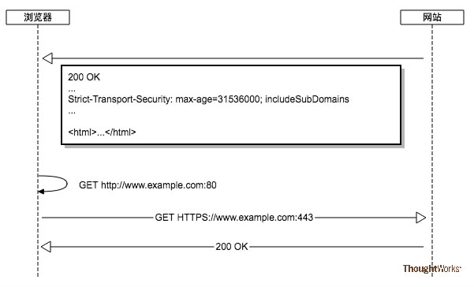
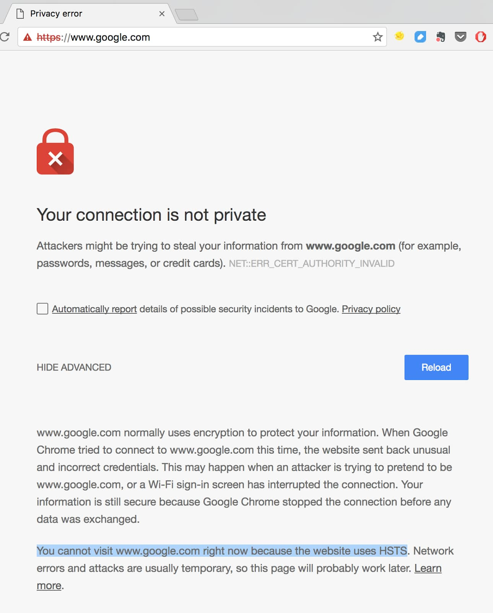

起因
有不少网站只通过HTTPS对外提供服务，但用户在访问某个网站的时候，在浏览器里却往往直接输入网站域名（例如 www.example.com ），甚至都不带www前缀，而不是输入完整的URL（例如 https://www.example.com ）。不过浏览器依然能正确的使用HTTPS发起请求。这背后多亏了服务器和浏览器的协作。
现代浏览器，地址栏（多功能框）也可以用作搜索框。地址栏会自动使用 Google 进行搜索，但您也可将默认搜索引擎改设为另一搜索引擎。其实当我们在浏览器地址栏开始输入信息时，浏览器就已经开始进行工作了。
首先它会监听我们输入的信息并尝试匹配出你想要访问的网址或关键词，以 chrome浏览器 为例，它会猜我们想要什么，给出下面的建议项：
使用默认搜索引擎搜索关键字
书签，历史记录和最近下载中存储的其他链接
使用默认搜索引擎的相关关键字搜索选项
这些建议选项来源于输入内容匹配到的书签和历史记录（URL和title都可被匹配），输入关键字的搜索建议，以及其它的一些策略。Chrome提供了一个工具页chrome://predictors来查看历史建议。可以看出，每个建议会被计算命中次数和命中概率。如果输入的内容匹配到较高预测分值的建议项时，Chrome根据预测分值的高低会有不同的处理策略。
如在输入过程中就提前进行DNS预解析，预先建立TCP连接，甚至预先加载页面等。这样，当我们输入完URL按回车键时，Chrome其实已经提前开始工作了，以便为用户节省时间。
简单来讲，浏览器向网站发起一次HTTP请求，在得到一个重定向响应后，发起一次HTTPS请求并得到最终的响应内容。所有的这一切对用户而言是完全透明的，所以在用户眼里看来，在浏览器里直接输入域名却依然可以用HTTPS协议和网站进行安全的通信，是个不错的用户体验。
比如在 Nginx 中常见的强制 HTTP 跳转到 HTTPS，其实就是利用了 HTTP 的301跳转，参考腾讯云配置
如图：

SSL剥离攻击
上面的一切看上去都是那么的完美，但其实不然，由于在建立起HTTPS连接之前存在一次明文的HTTP请求和重定向（上图中的第1、2步），使得攻击者可以以中间人的方式劫持这次请求，从而进行后续的攻击，例如窃听数据，篡改请求和响应，跳转到钓鱼网站等。
以劫持请求并跳转到钓鱼网站为例，其大致做法如下图所示(劫持HTTP请求，阻止HTTPS连接，并进行钓鱼攻击)：
- 第1步：浏览器发起一次明文HTTP请求，但实际上会被攻击者拦截下来。
- 第2步：攻击者作为代理，把当前请求转发给钓鱼网站。
- 第3步：钓鱼网站返回假冒的网页内容。
- 第4步：攻击者把假冒的网页内容返回给浏览器。
这个攻击的精妙之处在于，攻击者直接劫持了HTTP请求，并返回了内容给浏览器，根本不给浏览器同真实网站建立HTTPS连接的机会。
因此浏览器会误以为真实网站就是通过HTTP对外提供服务，自然也就不会向用户报告当前的连接不安全。于是攻击者几乎可以神不知鬼不觉的对请求和响应动手脚。
既然建立HTTPS连接之前的这一次HTTP明文请求和重定向有可能被攻击者劫持，那么解决这一问题的思路自然就变成了如何避免出现这样的HTTP请求。
我们期望的浏览器行为是：当用户让浏览器发起HTTP请求的时候，浏览器内部将其转换为HTTPS请求，直接略过上述的HTTP请求和重定向，从而使得中间人攻击失效，规避风险。
HSTS技术
那么问题来了，浏览器是如何做到这一点的呢？它怎么知道哪个域名应该发HTTPS请求，那个域名应该用HTTP请求呢？
HSTS技术就这样被引进来了。
HSTS的全称是HTTP Strict-Transport-Security，它是一个Web安全策略机制（web security policy mechanism）。
HSTS最为核心的技术其实是一个HTTP响应头（HTTP Response Header）。
正是它可以让浏览器得知，在接下来的一段时间内，当前域名只能通过HTTPS进行访问，并且在浏览器发现当前连接不安全的情况下，强制拒绝用户的后续访问要求。
HSTS Header的语法如下：
1 | Strict-Transport-Security: <max-age=>[; includeSubDomains][; preload] |
max-age是必选参数，是一个以秒为单位的数值，它代表着HSTS Header的过期时间，通常设置为1年，即31536000秒。
includeSubDomains是可选参数，如果包含它，则意味着当前域名及其子域名均开启HSTS保护。
preload是可选参数，只有当你申请将自己的域名加入到浏览器内置列表的时候才需要使用到它。关于浏览器内置列表，下文有详细介绍。
让浏览器直接发起HTTPS请求
只要在服务器返回给浏览器的响应头中，增加Strict-Transport-Security这个HTTP Header（下文简称HSTS Header），例如：
Strict-Transport-Security: max-age=31536000; includeSubDomains
就可以告诉浏览器，在接下来的31536000秒内（1年），对于当前域名及其子域名的后续通信应该强制性的只使用HTTPS，直到超过有效期为止。
Chrome、Firefox 等浏览器里，当您尝试访问该域名下的内容时，会产生一个 307 Internal Redirect（内部跳转），自动跳转到 HTTPS 请求。
注意这段话，Chrome 访问该域名时，会产生一个 307 的内部跳转，并自动重定向到该地址的 HTTPS 版本。
这个 307 响应是虚假的（dummy），而非服务器生成的——即 Chrome 是先在内部进行了此操作，然后才发出真正到达目标服务器的 HTTPS 请求。
（注意HTTP规范中的 307 状态码描述是 Internal Redirect，而 307 状态码本身的描述是 Temporary Redirect）
很多地方都可以进行HSTS的配置，例如反向代理服务器、应用服务器、应用程序框架，以及应用程序中自定义Header。你可以根据实际情况进行选择。
常见的是在代理服务器中进行配置，以Nginx为例，只需在配置文件中加上下面这条指令即可：
1 | 在 Nginx的HTTPS的server块下面添加这个头部 |
如图：

只要是在有效期内，浏览器都将直接强制性的发起HTTPS请求，但是问题又来了，有效期过了怎么办？其实不用为此过多担心。
因为 HSTS Header 存在于每个响应中，随着用户和网站的交互，这个有效时间时刻都在刷新，再加上有效期通常都被设置成了1年。
所以只要用户的前后两次请求之间的时间间隔没有超过1年，则基本上不会出现安全风险。
更何况，就算超过了有效期，但是只要用户和网站再进行一次新的交互，用户的浏览器又将开启有效期为1年的HSTS保护。
强制拒绝非HTTPS请求
在没有HSTS保护的情况下，当浏览器发现当前网站的证书出现错误，或者浏览器和服务器之间的通信不安全，无法建立HTTPS连接的时候，浏览器通常会警告用户，但是却又允许用户继续不安全的访问。（比如使用自签证书的网站，但是客户端电脑上又没有添加信任的CA）
如下图所示，用户可以点击图中红色方框中的链接，继续在不安全的连接下进行访问。(浏览器依然允许用户进行不安全的访问)
理论上而言，用户看到这个警告之后就应该提高警惕，意识到自己和网站之间的通信不安全，可能被劫持也可能被窃听，如果访问的恰好是银行、金融类网站的话后果更是不堪设想，理应终止后续操作。
然而现实很残酷，就我的实际观察来看，有不少用户在遇到这样的警告之后依然选择了继续访问。
不过随着HSTS的出现，事情有了转机。对于启用了浏览器HSTS保护的网站，如果浏览器发现当前连接不安全，它将仅仅警告用户，而不再给用户提供是否继续访问的选择，从而避免后续安全问题的发生。
例如，当访问Google搜索引擎的时候，如果当前通信连接存在安全问题，浏览器将会彻底阻止用户继续访问Google，如下图所示。
)
HSTS Preload List
HSTS存在一个比较薄弱的环节，那就是浏览器没有当前网站的HSTS信息的时候，或者第一次访问网站的时候，依然需要一次明文的HTTP请求和重定向才能切换到HTTPS，以及刷新HSTS信息。
而就是这么一瞬间却给攻击者留下了可乘之机，使得他们可以把这一次的HTTP请求劫持下来，继续中间人攻击。（还是存在被攻击的可能性）
针对上面的攻击，HSTS也有应对办法，那就是在浏览器里内置一个列表HSTS Preload List ，只要是在这个列表里的域名，无论何时、何种情况，浏览器访问它们都只会使用HTTPS发起连接。
这个列表由Google Chromium维护，FireFox、Safari、IE等主流浏览器均在使用。
不过需要特别注意的是，在生产环境下使用HSTS应当特别谨慎，因为一旦浏览器接收到HSTS Header（假如有效期是1年），但是网站的证书又恰好出了问题，那么用户将在接下来的1年时间内都无法访问到你的网站，直到证书错误被修复，或者用户主动清除浏览器缓存。
因此，建议在生产环境开启HSTS的时候，先将max-age的值设置小一些，例如5分钟，然后检查HSTS是否能正常工作，网站能否正常访问，之后再逐步将时间延长，例如1周、1个月，并在这个时间范围内继续检查HSTS是否正常工作，最后才改到1年
如何把域名加入到 HSTS Preload List （这个操作要慎重）
- 具备一个有效的证书
- 在同一台主机上提供重定向响应，以及接收重定向过来的HTTPS请求
- 所有子域名均使用HTTPS
- 在根域名的HTTP响应头中，加入HSTS Header，并满足下列条件：
- 过期时间最短不得少于18周（10886400秒 ）
- 必须包含includeSubDomains参数
- 必须包含preload参数
- 也就是说
https://github.com/chromium/chromium
当你准好这些之后，可以在 HSTS Preload List的官网上（https://hstspreload.org）提交申请，或者了解更多详细的内容。